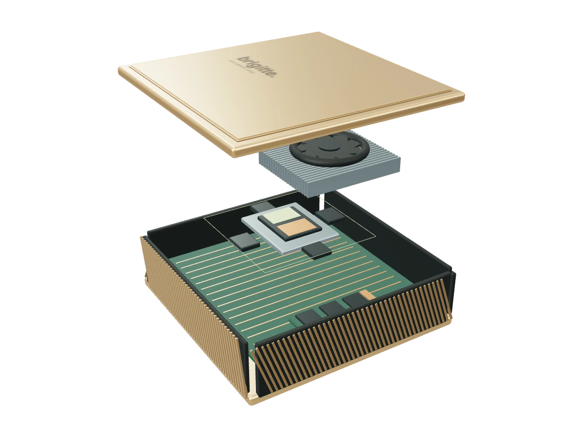
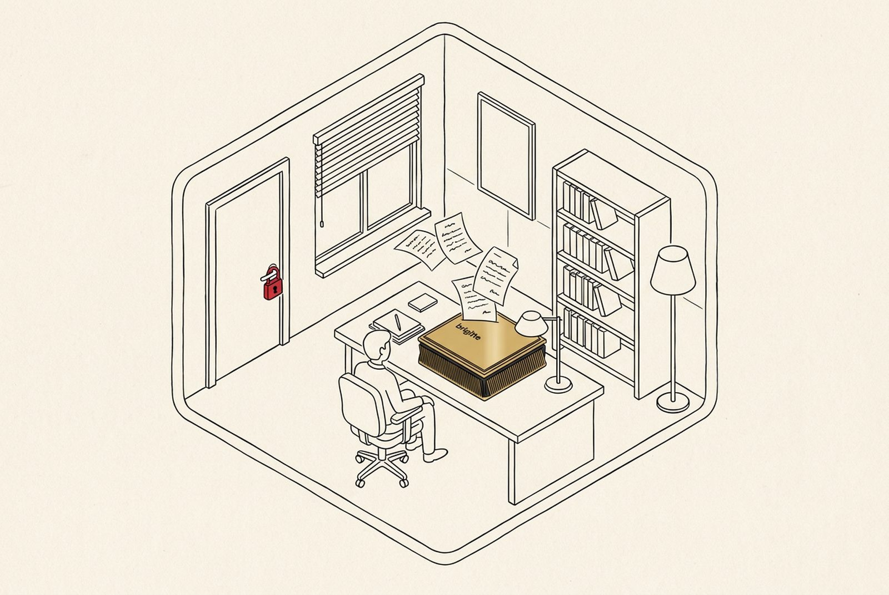
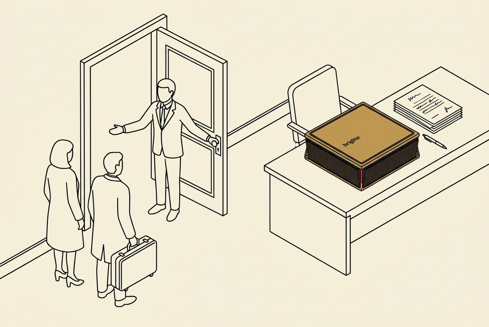

Retrouver
Posez une question aux dossiers que vous confiez à Brigitte. Elle prépare une réponse et montre les documents sur lesquels elle s’appuie. Les points incertains restent à vérifier.
Pour les études d’avocats
Brigitte prépare le travail à partir de vos dossiers, sur le matériel installé dans vos locaux. Vous relisez et décidez.

blackcode SA est membre du programme NVIDIA Inception.
01 / Le travail de l’étude
Une clause déjà négociée. Une pièce source. L’historique d’une affaire repris par un collègue.
Posez une question aux dossiers que vous confiez à Brigitte. Elle prépare une réponse et montre les documents sur lesquels elle s’appuie. Les points incertains restent à vérifier.
Une chronologie, une synthèse, un projet de courrier ou une relecture de contrat : les fonctions sont définies avec votre étude, selon vos documents et vos accès.
Chaque résultat reste à relire. L’avocat valide le travail préparé ; les connexions et les sources externes dépendent de vos droits et des intégrations convenues.
02 / Le cadre
Vos documents sont traités sur la box, dans votre étude. Les interventions de support et les connexions autorisées sont définies avec vous.
L’installation locale ne certifie pas la conformité. Votre étude conserve la responsabilité de ses choix, des accès et de la vérification des résultats.
Comprendre le fonctionnement →
03 / La mise en route
Un premier périmètre, adapté à vos habitudes de travail.
Un rendez-vous, un récapitulatif, puis un atelier pour préciser les documents, les outils et les fonctions à préparer.
Notre équipe vient dans votre étude pour l’installation et la prise en main avec vos collaborateurs.
Un accompagnement pendant les premières semaines. Les modalités de support sont convenues avec votre étude.
Un premier échange
Vos usages. Vos dossiers. Votre cadre.
Une démonstration en 20 minutes.
